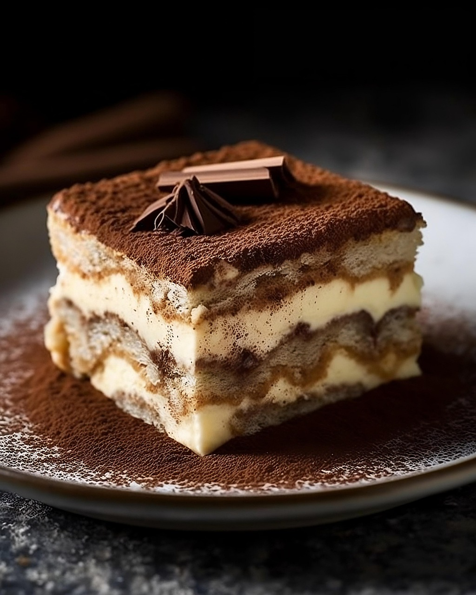

Tiramisu recipe
Homepage

Description
This tiramisu recipe is from the RICARDO website and has overwhelmingly positive reviews. It takes about 45 minutes to prepare, 5 minutes to bake and it requires a 24 hour cooling period. The measurements displayed in the section below are suitable for 10 to 12 portions.
Ingredients
- 1 cup sugar
- 3/4 cup espresso, hot
- 1/4 cup milk
- 2 tbsp coffee liqueur
- 5 egg yolks
- 1/2 tsp vanilla
- 17 oz mascarpone cheese, room temp
- 1 1/2 cups 35% cream
- 30 ladyfingers
- 2 tbsp cocoa powder, sifted
Steps
- In a small bowl, combine the coffee with 2 tbsp of the sugar. Add the milk and coffee liqueur. Refrigerate until needed.
- In a bowl, whisk the egg yolks, vanilla and 1/4 cup (60 ml) of the sugar. Place the bowl over a saucepan of simmering water and continue whisking until the mixture forms a ribbon as it falls from the whisk, about 5 minutes. Remove the bowl from over the saucepan and continue whisking with an electric mixture until the mixture is only just warm. Add the mascarpone and mix to combine. Set aside.
- In another bowl, whisk the cream and remaining sugar (2/3 cup/150 ml) until firm peaks form. Using a spatula, gently fold the cream mixture into the mascarpone mixture.
- Cover the bottom of an 11 x 8-inch (28 x 20 cm), 10-cup (2.5 litre) rectangular dish with ladyfingers, first dipping them in the coffee mixture for 2 to 3 seconds each. Break the ladyfingers as needed to make them fit. Cover with half of the mascarpone mixture. Sprinkle half of the cocoa powder over the mascarpone mixture. Repeat with the remaining ingredients, ending with the cocoa powder. Cover with plastic wrap and refrigerate for at least 4 hours or preferably overnight.